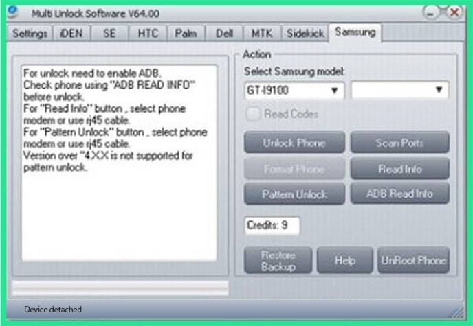

We now have Multi Unlock Software on the list which is quite an all-round phone unlock software. It not just unlocks password or pin locks but also help you to unlock pattern lock without losing data. With this tool your can unlock Android patter/password locks for devices like Sony Ericsson, Dell, Samsung, iDen, Palm, Sidekick, Huawei and ZTE. When using this software, make sure to remove your SIM card and plug in your SD card into your device to unlock Android phone pattern lock without losing data.

User-friendly interface and easy-to-use.
Works only on Windows XP/Windows 7.